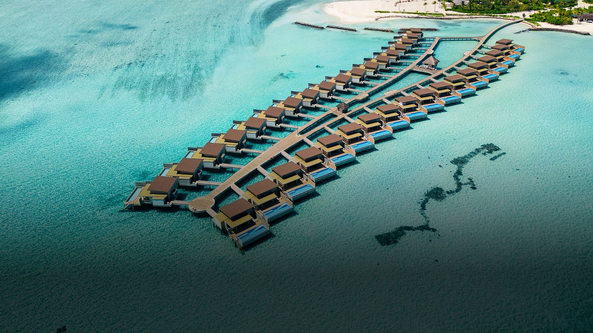
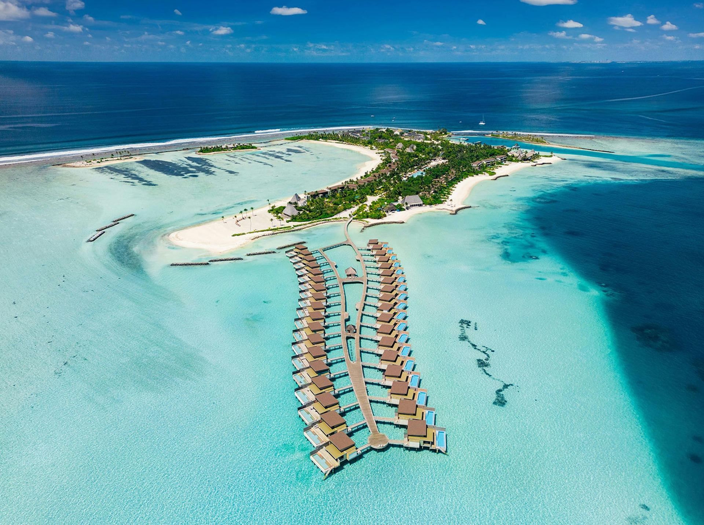
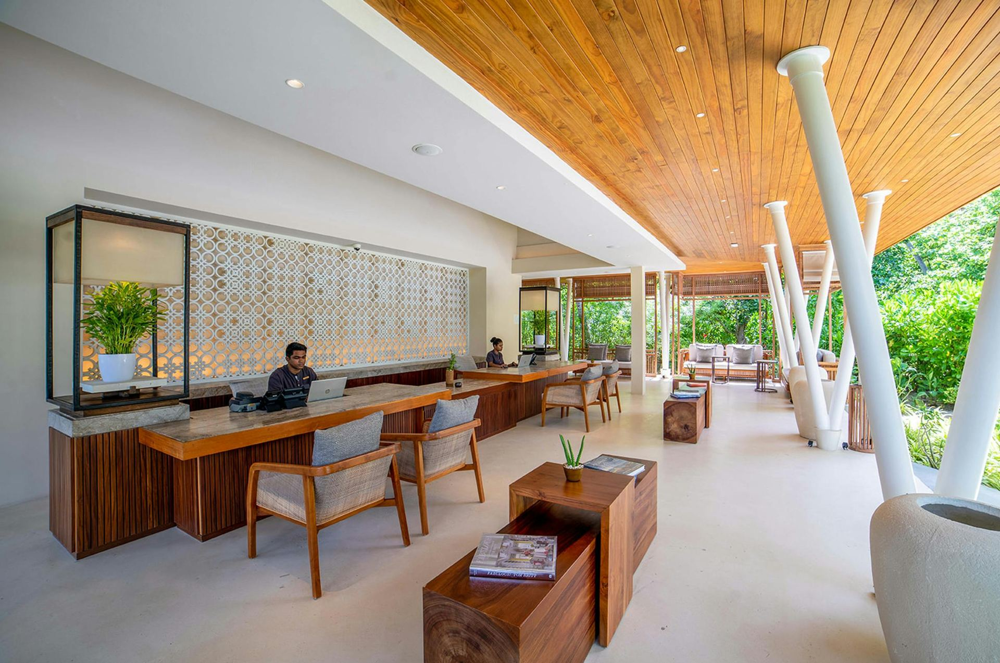
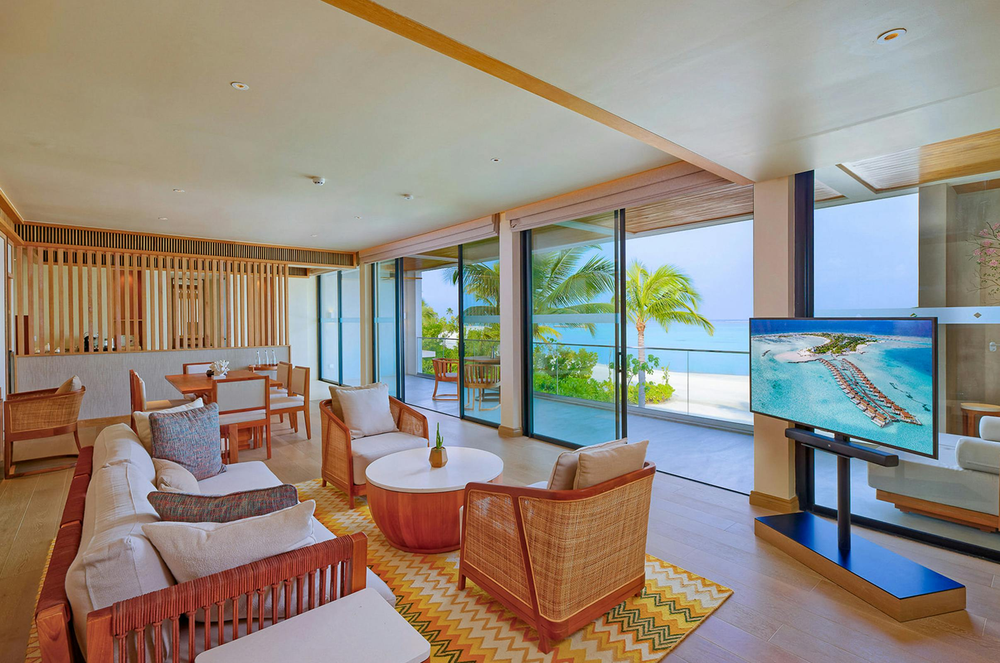
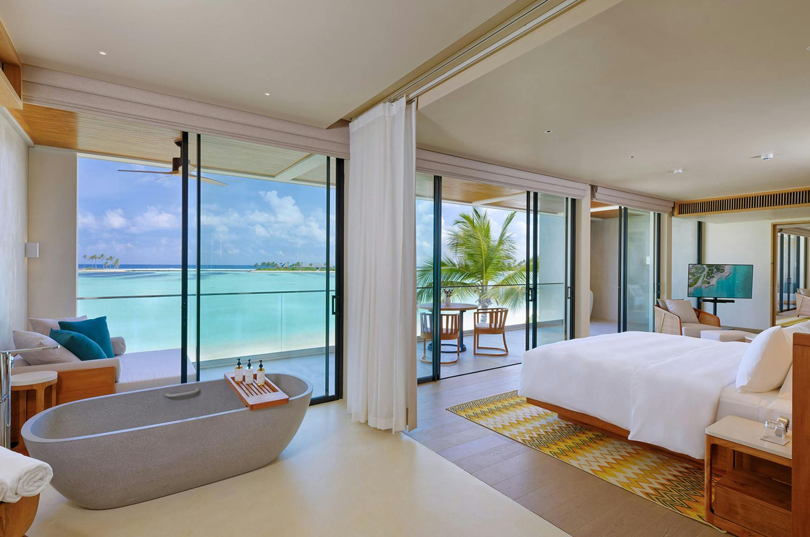

Пляжные виллы
Виллы у песка с террасой, садовой приватностью и быстрым выходом к пляжу. Подходят для гостей, которым важны удобная логистика, пляжный формат и спокойный дневной ритм.
Kuda Villingili Resort Maldives удобен для гостей, которым важна логистика без гидросамолета, современная инфраструктура и активный формат отдыха рядом с Мале.
Курорт подходит для коротких поездок, семейного отдыха и гостей, которые хотят совместить пляж, спорт, рестораны, большой бассейн и быстрый доступ к острову.
Kuda Villingili, North Male Atoll
по запросу
скоростной катер от Velana
пляжные и водные виллы
Размещение включает пляжные виллы, водные виллы и крупные резиденции. В категориях есть терраса, зона отдыха, Wi-Fi, мини-бар, чайная и кофейная станция, сейф, просторная ванная, а во многих виллах - собственный бассейн.

Виллы у песка с террасой, садовой приватностью и быстрым выходом к пляжу. Подходят для гостей, которым важны удобная логистика, пляжный формат и спокойный дневной ритм.

Виллы над лагуной с открытой террасой, зоной отдыха и прямым доступом к воде. Формат для пары или гостей, которые хотят больше вида и близости к океану.

Более крупные категории с несколькими спальнями, жилыми зонами и бассейнами. Удобны для семей и компаний, которым нужно больше пространства и инфраструктура рядом с Мале.


На острове удобно чередовать семейные ужины, легкие обеды у воды, бары и более камерные вечерние сценарии. Ресторанная инфраструктура рассчитана на то, чтобы не повторять один и тот же формат каждый день.
Курорт известен протяженным бассейном и пляжными зонами у лагуны. Собственные террасы и бассейны в виллах помогают держать отдых приватным, а общие зоны дают больше активности и пространства для семей.
SPA подходит для восстановления после перелета и активного дня: массажи, уходы, спокойные процедуры и расслабляющие сценарии. Формат скорее практичный и понятный, без лишней формальности.
Сильная сторона Kuda Villingili - активность: водный спорт, фитнес, теннис, падел, велосипеды, морские прогулки и пляжные сценарии. Быстрый трансфер делает отель удобным для короткой, но насыщенной поездки.
Для семей есть детские активности, пляж, бассейн и большой выбор пространства на острове. Отель удобен для поездок с детьми, когда важны короткий трансфер, понятное питание и насыщенная инфраструктура.
Выбор для семей, активных пар и гостей, которым нужно быстро попасть на остров и получить полноценную инфраструктуру 5* без гидросамолета.